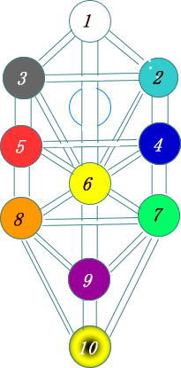

魔術
魔術の歴史 神智学 生命の樹 生命の樹とタロット| 魔術の歴史 | ||||
| 紀元前4000年 | ||||
| メソポタミア文明 シュメール | 「くさび形文字」 魔術の儀式が記録されている。 「ギルガメッシュ叙事詩」 人類最古の物語。箱舟を作って洪水からの脱却したり不死の薬草をヘビに食べられる話や冥界の話がある。 | |||
| バビロニア | 「占星術」 占星術のルーツ。ギリシャに継承される。 「ハンムラビ法典」 第ニ条は魔術による呪いの告訴に関するである。他の粘土板にも魔術の呪文や儀式が描かれている。 | |||
| エジプト文明 | 「ピラミッド、ミイラ」 霊魂の不滅・再生を信じて肉体を保存した。ミイラにはスカラベなどの護符も供えられた。 「死者の書」 死者の霊魂が肉体を離れて、死後の楽園に入るまでの過程を描いてる。 | |||
| ペルシャ帝国 | 「ゾロアスター教」 善悪二元論、拝火教、天国と地獄、終末論が特徴。聖職者は「マギ」と呼ばれた。薬物を使って、仮死状態になり、天国や地獄を見聞するという事も行われた。 | |||
| 紀元前３世紀（ヘレニズム文化） | ||||
| 新プラトン主義 | 「プロティノス」 一者から流出した叡智の模像が世界であると考えた。模像ゆえに流出するものは本体より常に劣った存在であり、一部は叡智そのものとつながっている。この万物の上にある一者に近づき合一することが目標であり、プロティノスは４度、その合一に達したという。 | |||
| グノーシス主義 | 物質は悪で、霊を善とする反宇宙的二元論。「ナグ・ハマディ文書」が有名である。 | |||
| ヘルメス思想 | [ヘルメス文書」 ヘルメス・トリスメギストスという伝説上の人物が著したと考えられた文献。哲学、占星術、錬金術、魔術などを含む。「エメラルドタブレットの内容」｛下にあるものは上にあるもののごとく、上にあるものは下にあるもののごとし････上なるものの力と下なるものの力を取り集めよ。こうして汝は全世界の栄光を手に入れ、すべての暗闇は汝から離れ去るだろう・・・｝ | |||
| ユダヤ教神秘主義 | 「カバラ」 旧約聖書では、生命の樹の実を食べると、神のように永遠の命を手に入れられるとされている。カバラでは生命の樹はセフィロトの木とも呼ばれ、宇宙万物を解析する為の象徴図表になっている。 | |||
| 16世紀（ルネッサンス） | ||||
| パラケルスス | 錬金術を学び、人工の生命（ホムンクルス）の実験をする。 | |||
| ジョン・ディー | エドワード・ケリーという霊媒により、天使と交信し、”エノク語”を授かった。 | |||
| ヤコブ・ベーメ | ヴィジョンを見るという神秘体験を何度も経験する。 | |||
| １７～１８世紀 | ||||
| スウェーデンボルグ | スウェーデン生まれの神学者。息を止めるという瞑想法で、数多くの体外離脱をする。「霊界日記」で霊界の様子を記述する。 | |||
| １９世紀前半 | ||||
| エリファス・レヴィ | 近代魔術のさきがけとなる。主要な著作として、「高等魔術の教理と祭儀～教理篇」がある。 | |||
| １９世紀後半～２０世紀 | ||||
| 黄金の夜明け団 （Golden Dawn） |
イギリスで創設された秘密結社。団員にメイザース、クロウリー、詩人のイェイツなどがいる。 | |||
| メイザース(Macgregor Mathers) | 黄金の夜明け団を設立する。「ヴェールを脱いだカバラ」などの著作物がある。 | |||
| アレイスター・クロウリー | 『６６６』を名乗り、２０世紀最大と言われる魔術師。著作物には守護天使エイワスと交信し「法の書」などがある。 | |||
| イスラエル・リガルディー | クロウリーの私設秘書。黄金の夜明け団を公に知らしめた。 | |||
| ダイアン・フォーチュン | 魔術と心理学を結合。黄金の夜明け団とも関わりがある。「心霊的自己防衛」「神秘のカバラー」など | |||
| オースティン・スペア | オカルト画家。クロウリーに影響を受け、性魔術を実践する。 | |||
| ケネス・グラント | スペアの遺著管理人。性魔術に関する「魔術の復活」などを著作する。 | |||
| W. E. バトラー | フォーチュンの下で修行を積む。代表作に「魔法入門」がある。 | |||
| 神智学 （Theosophy） |
アストラル体、エーテル体、七つの基本種族による宇宙進化論、アカシック・レコードなどの思想。 | |||
| マダム・ブラヴァツキー | 神智学協会を設立する。霊媒師として人気を博す。著作物に「シークレット・ドクトリン」がある。 | |||
| 人智学 （Anthroposophie） |
人間を霊、、魂、体の三層構造として捉える。思想の影響は、医学、芸術、神学、農業、学校教育など多分野に及ぶ。 |
|||
| ルドルフ・シュタイナー | 神智学から発展して人智学を設立する。 | |||
| グルジェフ | ロシアの神秘家。イスラムのスーフィーの流れをくむ回転舞踏、音楽などにより覚醒を目指す。著作に「ベルゼバブの孫への話」がある。 | |||
|
|
|
神智学では人間は、肉体、エーテル体、アストラル体、真我から、構成されているとされている。 肉体 肉体はそれだけではただの物質にすぎず、エーテル体、アストラル体、真我が組み合わされて人間となる。 エーテル体 肉体とそっくりの形をしていて、肉体に生命力を供給する働きがあるので生命体とも言われる。気の体とかオーラとも言われることがある。瞑想して感じられる気のエネルギーや振動は、このエーテル体が活性化することによる。幽体離脱では、まずこのエーテル体が肉体から離脱するが、エーテル体は、肉体から遠く離れることはできない。 アストラル体 感情の体、あるいは情緒・欲求性質の体ともいわれる。普段、夢を見ている時は、意識はないが、このアストラル体が肉体から抜け出て別世界に行っている。幽体離脱では、エーテル体からアストラル体を離脱させｔことによって、肉体の束縛から離れて、別世界へ行くことができる。 真我 自我を超えた自我。今までの輪廻転生の過去世の記憶がたくわえられた超意識。ロバート・モンローやウィリアム・ブールマンによれば、幽体離脱によって、真我に到達することも可能である。 |
| 生命の樹 |
| カバラ（ユダヤの神秘思想）の思想体系 |
| セフィロト （１のケテルから２，３，４と番号順に、１０のマルクトへ分化していく。） | ||||
 |
||||
| １ | ケテル | 王冠 | 純粋存在であり生命の源泉。神秘体験は『神との合一』 | |
| ２ | コクマー | 知恵 | 至高の父 。「力」 | |
| ３ | ビナー | 理解 | 土星 | 至高の母。 「形」 |
| ４ | ケセド | 慈愛 | 木星 | 「創造」 |
| ５ | ゲブラー | 神の力 | 火星 | 「正義の破壊」 |
| ６ | ティフェレト | 美 | 太陽 | 生命の樹の中心。神秘体験は『光を伴った神秘体験、真の天啓的霊視』 |
| ７ | ネツァク | 勝利 | 金星 | 「豊穣」「本能」 |
| ８ | ホド | 栄光 | 水星 | 「鋳型」「知性」 |
| ９ | イェセド | 基盤 | 月 | エーテル体。神秘体験は『心霊的体験』 |
| １０ | マルクト | 王国 | 地球 | 現実界の意識 |
| ダアト | 深淵 | コクマーとビナーの中間にあり、莫大な知識が納められている。 | ||
| ３本の柱 | ||
| 「慈悲の柱」 | コクマー、ケセド、ネツァクを結ぶ柱 | 男性的、能動的な力 |
| 「均衡の柱」 | ケテル、ティフェレト、イェセド、マルクトを結ぶ柱 | 意識の各次元を表す。意識の拡大はこの柱に沿って行われる。 |
| 「峻厳の柱」 | ビナー、ゲブラー、ホドを結ぶ柱 | 女性的、受動的能力 |
| ３つの三角形 | （中央のセフィロトは対立する２極を持って機能する。） | |
| 至高の三角形 | ケテル、コクマー、ビナー | 力（コクマー）と形（ビナー）がこの顕現世界の単位となっている。 |
| 反映の三角形 | ティフェレト、ケセド、ゲブラー | 創造（ケセド）と破壊（ゲブラー）によって霊的発展を成し遂げる霊魂を形成する。 |
| 低次の三角形 | イェソド、ネツァク、ホド | 感情（ネツァク）と集中した意志（ホド）はアストラル界における力と形である。 |
|
|
||